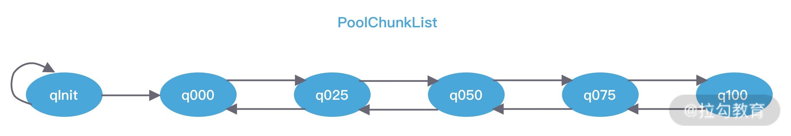
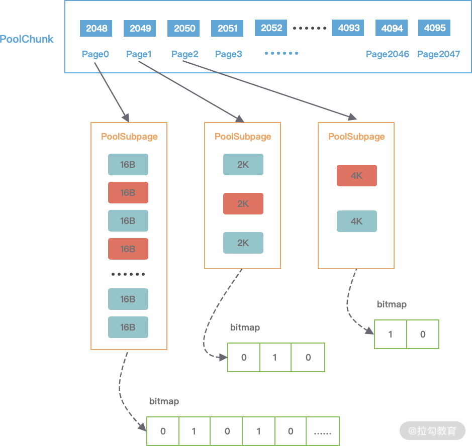
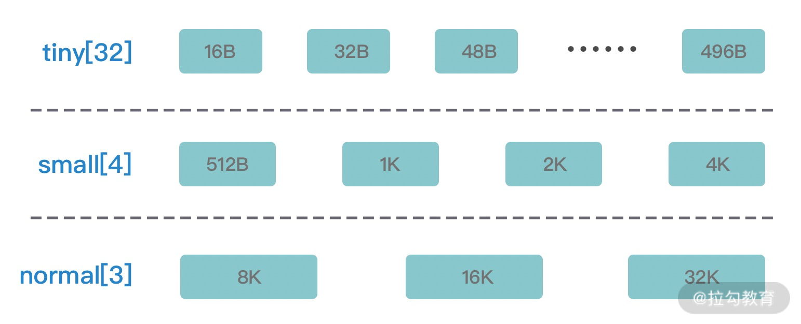

- 00 学好 Netty，是你修炼 Java 内功的必经之路.md.html
- 01 初识 Netty：为什么 Netty 这么流行？.md.html
- 02 纵览全局：把握 Netty 整体架构脉络.md.html
- 03 引导器作用：客户端和服务端启动都要做些什么？.md.html
- 04 事件调度层：为什么 EventLoop 是 Netty 的精髓？.md.html
- 05 服务编排层：Pipeline 如何协调各类 Handler ？.md.html
- 06 粘包拆包问题：如何获取一个完整的网络包？.md.html
- 07 接头暗语：如何利用 Netty 实现自定义协议通信？.md.html
- 08 开箱即用：Netty 支持哪些常用的解码器？.md.html
- 09 数据传输：writeAndFlush 处理流程剖析.md.html
- 10 双刃剑：合理管理 Netty 堆外内存.md.html
- 11 另起炉灶：Netty 数据传输载体 ByteBuf 详解.md.html
- 12 他山之石：高性能内存分配器 jemalloc 基本原理.md.html
- 13 举一反三：Netty 高性能内存管理设计（上）.md.html
- 14 举一反三：Netty 高性能内存管理设计（下）.md.html
- 15 轻量级对象回收站：Recycler 对象池技术解析.md.html
- 16 IO 加速：与众不同的 Netty 零拷贝技术.md.html
- 17 源码篇：从 Linux 出发深入剖析服务端启动流程.md.html
- 18 源码篇：解密 Netty Reactor 线程模型.md.html
- 19 源码篇：一个网络请求在 Netty 中的旅程.md.html
- 20 技巧篇：Netty 的 FastThreadLocal 究竟比 ThreadLocal 快在哪儿？.md.html
- 21 技巧篇：延迟任务处理神器之时间轮 HashedWheelTimer.md.html
- 22 技巧篇：高性能无锁队列 Mpsc Queue.md.html
- 23 架构设计：如何实现一个高性能分布式 RPC 框架.md.html
- 24 服务发布与订阅：搭建生产者和消费者的基础框架.md.html
- 25 远程通信：通信协议设计以及编解码的实现.md.html
- 26 服务治理：服务发现与负载均衡机制的实现.md.html
- 27 动态代理：为用户屏蔽 RPC 调用的底层细节.md.html
- 28 实战总结：RPC 实战总结与进阶延伸.md.html
- 29 编程思想：Netty 中应用了哪些设计模式？.md.html
- 30 实践总结：Netty 在项目开发中的一些最佳实践.md.html
- 31 结束语 技术成长之路：如何打造自己的技术体系.md.html
- 捐赠
13 举一反三：Netty 高性能内存管理设计（上）
Netty 作为一款高性能的网络框架，需要处理海量的字节数据，而且 Netty 默认提供了池化对象的内存分配，使用完后归还到内存池，所以一套高性能的内存管理机制是 Netty 必不可少的。在上节课中我们介绍了原生 jemalloc 的基本原理，而 Netty 高性能的内存管理也是借鉴 jemalloc 实现的，它同样需要解决两个经典的核心问题：
- 在单线程或者多线程的场景下，如何高效地进行内存分配和回收？
- 如何减少内存碎片，提高内存的有效利用率？
我们同样带着这两个经典问题开始 Netty 内存管理的课程学习。
内存规格介绍
Netty 保留了内存规格分类的设计理念，不同大小的内存块采用的分配策略是不同的，具体内存规格的分类情况如下图所示。

上图中 Tiny 代表 0 ~ 512B 之间的内存块，Samll 代表 512B ~ 8K 之间的内存块，Normal 代表 8K ~ 16M 的内存块，Huge 代表大于 16M 的内存块。在 Netty 中定义了一个 SizeClass 类型的枚举，用于描述上图中的内存规格类型，分别为 Tiny、Small 和 Normal。但是图中 Huge 并未在代码中定义，当分配大于 16M 时，可以归类为 Huge 场景，Netty 会直接使用非池化的方式进行内存分配。
Netty 在每个区域内又定义了更细粒度的内存分配单位，分别为 Chunk、Page、Subpage，我们将逐一对其进行介绍。
Chunk 是 Netty 向操作系统申请内存的单位，所有的内存分配操作也是基于 Chunk 完成的，Chunk 可以理解为 Page 的集合，每个 Chunk 默认大小为 16M。
Page 是 Chunk 用于管理内存的单位，Netty 中的 Page 的大小为 8K，不要与 Linux 中的内存页 Page 相混淆了。假如我们需要分配 64K 的内存，需要在 Chunk 中选取 8 个 Page 进行分配。
Subpage 负责 Page 内的内存分配，假如我们分配的内存大小远小于 Page，直接分配一个 Page 会造成严重的内存浪费，所以需要将 Page 划分为多个相同的子块进行分配，这里的子块就相当于 Subpage。按照 Tiny 和 Small 两种内存规格，SubPage 的大小也会分为两种情况。在 Tiny 场景下，最小的划分单位为 16B，按 16B 依次递增，16B、32B、48B …… 496B；在 Small 场景下，总共可以划分为 512B、1024B、2048B、4096B 四种情况。Subpage 没有固定的大小，需要根据用户分配的缓冲区大小决定，例如分配 1K 的内存时，Netty 会把一个 Page 等分为 8 个 1K 的 Subpage。
了解了 Netty 不同粒度的内存的分配单位后，我们接下来看看 Netty 中的 jemalloc 是如何实现的。
Netty 内存池架构设计
Netty 中的内存池可以看作一个 Java 版本的 jemalloc 实现，并结合 JVM 的诸多特性做了部分优化。如下图所示，我们首先从全局视角看下 Netty 内存池的整体布局，对它有一个宏观的认识。

基于上图的内存池模型，Netty 抽象出一些核心组件，如 PoolArena、PoolChunk、PoolChunkList、PoolSubpage、PoolThreadCache、MemoryRegionCache 等，可以看出与 jemalloc 中的核心概念有些是类似的，接下来我们逐一进行介绍。
PoolArena
Netty 借鉴了 jemalloc 中 Arena 的设计思想，采用固定数量的多个 Arena 进行内存分配，Arena 的默认数量与 CPU 核数有关，通过创建多个 Arena 来缓解资源竞争问题，从而提高内存分配效率。线程在首次申请分配内存时，会通过 round-robin 的方式轮询 Arena 数组，选择一个固定的 Arena，在线程的生命周期内只与该 Arena 打交道，所以每个线程都保存了 Arena 信息，从而提高访问效率。
根据分配内存的类型，ByteBuf 可以分为 Heap 和 Direct，同样 PoolArena 抽象类提供了 HeapArena 和 DirectArena 两个子类。首先看下 PoolArena 的数据结构，如下图所示。

PoolArena 的数据结构包含两个 PoolSubpage 数组和六个 PoolChunkList，两个 PoolSubpage 数组分别存放 Tiny 和 Small 类型的内存块，六个 PoolChunkList 分别存储不同利用率的 Chunk，构成一个双向循环链表。
之前我们介绍了 Netty 内存规格的分类，PoolArena 对应实现了 Subpage 和 Chunk 中的内存分配，其 中 PoolSubpage 用于分配小于 8K 的内存，PoolChunkList 用于分配大于 8K 的内存。
PoolSubpage 也是按照 Tiny 和 Small 两种内存规格，设计了tinySubpagePools 和 smallSubpagePools 两个数组，根据关于 Subpage 的介绍，我们知道 Tiny 场景下，内存单位最小为 16B，按 16B 依次递增，共 32 种情况，Small 场景下共分为 512B、1024B、2048B、4096B 四种情况，分别对应两个数组的长度大小，每种粒度的内存单位都由一个 PoolSubpage 进行管理。假如我们分配 20B 大小的内存空间，也会向上取整找到 32B 的 PoolSubpage 节点进行分配。
PoolChunkList 用于 Chunk 场景下的内存分配，PoolArena 中初始化了六个 PoolChunkList，分别为 qInit、q000、q025、q050、q075、q100，这与 jemalloc 中 run 队列思路是一致的，它们分别代表不同的内存使用率，如下所示：
- qInit，内存使用率为 0 ~ 25% 的 Chunk。
- q000，内存使用率为 1 ~ 50% 的 Chunk。
- q025，内存使用率为 25% ~ 75% 的 Chunk。
- q050，内存使用率为 50% ~ 100% 的 Chunk。
- q075，内存使用率为 75% ~ 100% 的 Chunk。
- q100，内存使用率为 100% 的 Chunk。
六种类型的 PoolChunkList 除了 qInit，它们之间都形成了双向链表，如下图所示。

随着 Chunk 内存使用率的变化，Netty 会重新检查内存的使用率并放入对应的 PoolChunkList，所以 PoolChunk 会在不同的 PoolChunkList 移动。
我在刚开始学习 PoolChunkList 的时候的一个疑问就是，qInit 和 q000 为什么需要设计成两个，是否可以合并成一个？其实它们各有用处。
qInit 用于存储初始分配的 PoolChunk，因为在第一次内存分配时，PoolChunkList 中并没有可用的 PoolChunk，所以需要新创建一个 PoolChunk 并添加到 qInit 列表中。qInit 中的 PoolChunk 即使内存被完全释放也不会被回收，避免 PoolChunk 的重复初始化工作。
q000 则用于存放内存使用率为 1 ~ 50% 的 PoolChunk，q000 中的 PoolChunk 内存被完全释放后，PoolChunk 从链表中移除，对应分配的内存也会被回收。
还有一点需要注意的是，在分配大于 8K 的内存时，其链表的访问顺序是 q050->q025->q000->qInit->q075，遍历检查 PoolChunkList 中是否有 PoolChunk 可以用于内存分配，源码如下：
private void allocateNormal(PooledByteBuf<T> buf, int reqCapacity, int normCapacity) {
if (q050.allocate(buf, reqCapacity, normCapacity) || q025.allocate(buf, reqCapacity, normCapacity) ||
q000.allocate(buf, reqCapacity, normCapacity) || qInit.allocate(buf, reqCapacity, normCapacity) ||
q075.allocate(buf, reqCapacity, normCapacity)) {
return;
}
PoolChunk<T> c = newChunk(pageSize, maxOrder, pageShifts, chunkSize);
boolean success = c.allocate(buf, reqCapacity, normCapacity);
assert success;
qInit.add(c);
}
这里你或许有了疑问，为什么会优先选择 q050，而不是从 q000 开始呢？
可以说这是一个折中的选择，在频繁分配内存的场景下，如果从 q000 开始，会有大部分的 PoolChunk 面临频繁的创建和销毁，造成内存分配的性能降低。如果从 q050 开始，会使 PoolChunk 的使用率范围保持在中间水平，降低了 PoolChunk 被回收的概率，从而兼顾了性能。
PoolArena 是 Netty 内存分配中非常重要的部分，我们花了较多篇幅进行讲解，对之后理解内存分配的实现原理会有所帮助。
PoolChunkList
PoolChunkList 负责管理多个 PoolChunk 的生命周期，同一个 PoolChunkList 中存放内存使用率相近的 PoolChunk，这些 PoolChunk 同样以双向链表的形式连接在一起，PoolChunkList 的结构如下图所示。因为 PoolChunk 经常要从 PoolChunkList 中删除，并且需要在不同的 PoolChunkList 中移动，所以双向链表是管理 PoolChunk 时间复杂度较低的数据结构。

每个 PoolChunkList 都有内存使用率的上下限：minUsage 和 maxUsage，当 PoolChunk 进行内存分配后，如果使用率超过 maxUsage，那么 PoolChunk 会从当前 PoolChunkList 移除，并移动到下一个 PoolChunkList。同理，PoolChunk 中的内存发生释放后，如果使用率小于 minUsage，那么 PoolChunk 会从当前 PoolChunkList 移除，并移动到前一个 PoolChunkList。
回过头再看下 Netty 初始化的六个 PoolChunkList，每个 PoolChunkList 的上下限都有交叉重叠的部分，如下图所示。因为 PoolChunk 需要在 PoolChunkList 不断移动，如果每个 PoolChunkList 的内存使用率的临界值都是恰好衔接的，例如 1 ~ 50%、50% ~ 75%，那么如果 PoolChunk 的使用率一直处于 50% 的临界值，会导致 PoolChunk 在两个 PoolChunkList 不断移动，造成性能损耗。

PoolChunk
Netty 内存的分配和回收都是基于 PoolChunk 完成的，PoolChunk 是真正存储内存数据的地方，每个 PoolChunk 的默认大小为 16M，首先我们看下 PoolChunk 数据结构的定义：
final class PoolChunk<T> implements PoolChunkMetric {
final PoolArena<T> arena;
final T memory; // 存储的数据
private final byte[] memoryMap; // 满二叉树中的节点是否被分配，数组大小为 4096
private final byte[] depthMap; // 满二叉树中的节点高度，数组大小为 4096
private final PoolSubpage<T>[] subpages; // PoolChunk 中管理的 2048 个 8K 内存块
private int freeBytes; // 剩余的内存大小
PoolChunkList<T> parent;
PoolChunk<T> prev;
PoolChunk<T> next;
// 省略其他代码
}
PoolChunk 可以理解为 Page 的集合，Page 只是一种抽象的概念，实际在 Netty 中 Page 所指的是 PoolChunk 所管理的子内存块，每个子内存块采用 PoolSubpage 表示。Netty 会使用伙伴算法将 PoolChunk 分配成 2048 个 Page，最终形成一颗满二叉树，二叉树中所有子节点的内存都属于其父节点管理，如下图所示。

结合 PoolChunk 的结构图，我们介绍一下 PoolChunk 中几个重要的属性：
depthMap 用于存放节点所对应的高度。例如第 2048 个节点 depthMap[1025] = 10。
memoryMap 用于记录二叉树节点的分配信息，memoryMap 初始值与 depthMap 是一样的，随着节点被分配，不仅节点的值会改变，而且会递归遍历更新其父节点的值，父节点的值取两个子节点中最小的值。
subpages 对应上图中 PoolChunk 内部的 Page0、Page1、Page2 …… Page2047，Netty 中并没有 Page 的定义，直接使用 PoolSubpage 表示。当分配的内存小于 8K 时，PoolChunk 中的每个 Page 节点会被划分成为更小粒度的内存块进行管理，小内存块同样以 PoolSubpage 管理。从图中可以看出，小内存的分配场景下，会首先找到对应的 PoolArena ，然后根据计算出对应的 tinySubpagePools 或者 smallSubpagePools 数组对应的下标，如果对应数组元素所包含的 PoolSubpage 链表不存在任何节点，那么将创建新的 PoolSubpage 加入链表中。
PoolSubpage
目前大家对 PoolSubpage 应该有了一些认识，在小内存分配的场景下，即分配的内存大小小于一个 Page 8K，会使用 PoolSubpage 进行管理。首先看下 PoolSubpage 的定义：
final class PoolSubpage<T> implements PoolSubpageMetric {
final PoolChunk<T> chunk;
private final int memoryMapIdx; // 对应满二叉树节点的下标
private final int runOffset; // PoolSubpage 在 PoolChunk 中 memory 的偏移量
private final long[] bitmap; // 记录每个小内存块的状态
// 与 PoolArena 中 tinySubpagePools 或 smallSubpagePools 中元素连接成双向链表
PoolSubpage<T> prev;
PoolSubpage<T> next;
int elemSize; // 每个小内存块的大小
private int maxNumElems; // 最多可以存放多少小内存块：8K/elemSize
private int numAvail; // 可用于分配的内存块个数
// 省略其他代码
}
PoolSubpage 中每个属性的含义都比较清晰易懂，我都以注释的形式标出，在这里就不一一赘述了，只指出其中比较重点的两个知识点：
第一个就是 PoolSubpage 是如何记录内存块的使用状态的呢？PoolSubpage 通过位图 bitmap 记录子内存是否已经被使用，bit 的取值为 0 或者 1，如下图所示。

第二个就是 PoolSubpage 和 PoolArena 之间是如何联系起来的？
通过之前的介绍，我们知道 PoolArena 在创建是会初始化 tinySubpagePools 和 smallSubpagePools 两个 PoolSubpage 数组，数组的大小分别为 32 和 4。
假如我们现在需要分配 20B 大小的内存，会向上取整为 32B，从满二叉树的第 11 层找到一个 PoolSubpage 节点，并把它等分为 8KB/32B = 256B 个小内存块，然后找到这个 PoolSubpage 节点对应的 PoolArena，将 PoolSubpage 节点与 tinySubpagePools[1] 对应的 head 节点连接成双向链表，形成下图所示的结构。

下次再有 32B 规格的内存分配时，会直接查找 PoolArena 中 tinySubpagePools[1] 元素的 next 节点是否存在可用的 PoolSubpage，如果存在将直接使用该 PoolSubpage 执行内存分配，从而提高了内存分配效率，其他内存规格的分配原理类似。
PoolThreadCache & MemoryRegionCache
PoolThreadCache 顾名思义，对应的是 jemalloc 中本地线程缓存的意思。那么 PoolThreadCache 是如何被使用的呢？它可以缓存哪些类型的数据呢？
当内存释放时，与 jemalloc 一样，Netty 并没有将缓存归还给 PoolChunk，而是使用 PoolThreadCache 缓存起来，当下次有同样规格的内存分配时，直接从 PoolThreadCache 取出使用即可。PoolThreadCache 缓存 Tiny、Small、Normal 三种类型的数据，而且根据堆内和堆外内存的类型进行了区分，如 PoolThreadCache 的源码定义所示：
final class PoolThreadCache {
final PoolArena<byte[]> heapArena;
final PoolArena<ByteBuffer> directArena;
private final MemoryRegionCache<byte[]>[] tinySubPageHeapCaches;
private final MemoryRegionCache<byte[]>[] smallSubPageHeapCaches;
private final MemoryRegionCache<ByteBuffer>[] tinySubPageDirectCaches;
private final MemoryRegionCache<ByteBuffer>[] smallSubPageDirectCaches;
private final MemoryRegionCache<byte[]>[] normalHeapCaches;
private final MemoryRegionCache<ByteBuffer>[] normalDirectCaches;
// 省略其他代码
}
PoolThreadCache 中有一个重要的数据结构：MemoryRegionCache。MemoryRegionCache 有三个重要的属性，分别为 queue，sizeClass 和 size，下图是不同内存规格所对应的 MemoryRegionCache 属性取值范围。

MemoryRegionCache 实际就是一个队列，当内存释放时，将内存块加入队列当中，下次再分配同样规格的内存时，直接从队列中取出空闲的内存块。
PoolThreadCache 将不同规格大小的内存都使用单独的 MemoryRegionCache 维护，如下图所示，图中的每个节点都对应一个 MemoryRegionCache，例如 Tiny 场景下对应的 32 种内存规格会使用 32 个 MemoryRegionCache 维护，所以 PoolThreadCache 源码中 Tiny、Small、Normal 类型的 MemoryRegionCache 数组长度分别为 32、4、3。

到此为止，Netty 中内存管理所涉及的核心组件都介绍完毕，推荐你回头再梳理一遍 jemalloc 的核心概念，与 Netty 做一个简单的对比，思路会更加清晰。
总结
知识都是殊途同归的，当你理解 jemalloc 之后，Netty 的内存管理也就不是那么难了，其中大部分的思路与 jemalloc 是保持一致的，所以打好基础非常重要。下节课我们继续看下 Netty 内存分配与回收的实现原理。
© 2019 - 2023 Liangliang Lee. Powered by gin and hexo-theme-book.